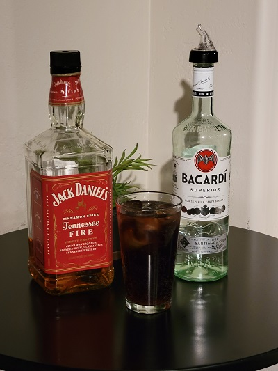

Description
A Cinnamony twist to a Bacaradi and Coke.
Invented by me and my son Dillon around a campfire in the Glamis desert during the populariy of Fireball.
We later switched to Jack Daniels Fire as it was easier on the stomach 😀 and tasted better.
Ingredients
- 1-2 oz - Bacardi Light Rum depending on how much fun you want have
- 1-2 oz - Jack Daniels Fire. More if you love cinnamon like I do
- 6-8 oz - Coke
Directions
- Fill tall glass with ice.
- Add Alcohol.
- Fill to the top of the glass with Coke.
- Stir
Return to Top
Return to Main